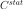
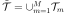
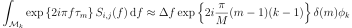

StationaryCovarianceModelFactory¶
(Source code, png, hires.png, pdf)
{kind=link}
{kind=link}

-
class
StationaryCovarianceModelFactory(*args)¶ Estimation of the covariance model of a stationary process.
Refer to Estimation of a stationary covariance model.
Parameters: - spectralModelFactory :
SpectralModelFactory The spectral model factory.
By default, it is the Welch factory model.
Notes
We consider
 be a multivariate process of dimension d where
be a multivariate process of dimension d where  . We only treat here the case where the domain is of dimension 1:
. We only treat here the case where the domain is of dimension 1:  (
( ).
We denote
).
We denote  the vertices of the mesh which is a time grid supposed regular.
the vertices of the mesh which is a time grid supposed regular.X is supposed to be a stationary second order process with zero mean. We note its covariance function
 , defined by for all
, defined by for all  .
.In addition, we suppose that its spectral density function
 is defined, where
is defined, where  is the set of d-dimensional positive definite hermitian matrices.
is the set of d-dimensional positive definite hermitian matrices.OpenTURNS estimates  from a field or a sample of fields of X, using first the estimation of the spectral density function and then mapping S into using the inversion relation :
when it is possible.
As the mesh is a time grid (
), the fields can be interpreted as time series.The estimation algorithm is outlined hereafter.
Let
 be M independent realizations of X or M segments of one realization of the process.
be M independent realizations of X or M segments of one realization of the process.Using the relation between the covariance model end the spectral function, the covariance function writes:
(1)¶
where
 is the element (i,j) of the matrix
is the element (i,j) of the matrix  and
and  the one of . The integral (1) is approximated by its evaluation on the finite domain
the one of . The integral (1) is approximated by its evaluation on the finite domain  :
:(2)¶
Let us consider the partition of the domain as follows:
- is subdivised into M segments with
![\mathcal{M}_k=[f_k - \frac{\Delta f}{2}, f_k + \frac{\Delta f}{2}]](../../_images/math/5af41aeede97bf526e50cd06ba894c0db4a8bc68.svg)
 be the frequency step,
be the frequency step, 
 be the frequences on which the spectral density is computed,
be the frequences on which the spectral density is computed,  with
with 
The equation (2) can be rewritten as:
We focus on the integral on each subdomain
 . Using numerical approximation, we have:
. Using numerical approximation, we have: must be in correspondance with frequency values with respect to the Shannon criteria. Thus the temporal domain of estimation is the following:
must be in correspondance with frequency values with respect to the Shannon criteria. Thus the temporal domain of estimation is the following: is the time step, such as
is the time step, such as - is subdivised into M segments  with
![\mathcal{T}_m=[t_m - \frac{\Delta t}{2}, t_m + \frac{\Delta t}{2}]](../../_images/math/c6eac66a1c567c80ca550505e5172701a0cf8edc.svg)
- be the time values on which the covariance is estimated,

The estimate of the covariance value at time value
 depends on the quantities of form:
depends on the quantities of form:(3)¶

We develop the expression of
and and we get:Thus:
and:
We denote:
Finally, we get the followig expression for integral in (3):

It follows that:
(4)¶
In the equation (4), we notice a discrete inverse Fourier transform.
Attributes: thisownThe membership flag
Methods
build(*args)Estimate a stationary covariance model. buildAsUserDefinedStationaryCovarianceModel(*args)Estimate the covariance model as a User defined covariance model. getClassName()Accessor to the object’s name. getId()Accessor to the object’s id. getName()Accessor to the object’s name. getShadowedId()Accessor to the object’s shadowed id. getSpectralModelFactory()Accessor to the underlying Welch agorithm. getVisibility()Accessor to the object’s visibility state. hasName()Test if the object is named. hasVisibleName()Test if the object has a distinguishable name. setName(name)Accessor to the object’s name. setShadowedId(id)Accessor to the object’s shadowed id. setSpectralModelFactory(factory)Accessor to the underlying Welch agorithm. setVisibility(visible)Accessor to the object’s visibility state. -
__init__(*args)¶ Initialize self. See help(type(self)) for accurate signature.
-
build(*args)¶ Estimate a stationary covariance model.
- Available usages:
build(processSample)
build(field)
Parameters: - processSample :
ProcessSample The collection of fields used to estimate the covariance model.
- field :
Field The field used to estimate the covariance model.
Returns: - covEst :
CovarianceModelImplementation The estimated covariance model.
Notes
The fields must be time series, ie the underlying mesh must be a 1D lattice.
The estimated
CovarianceModelImplementationwhich is aUserDefinedStationaryCovarianceModelcomposed of a time grid and a collection of K square matrices of dimension d where K corresponds to the number of time steps of the final time grid on which the covariance is estimated.When estimated from a time series, the
UserDefinedStationaryCovarianceModelmay have a time grid different from the initial time grid of the time series.Examples
Create the stationary covariance model, a mesh and a process:
>>> import openturns as ot >>> myModel = ot.AbsoluteExponential([0.1]) >>> myTimeGrid = ot.RegularGrid(0.0, 0.1, 10) >>> myProcess = ot.GaussianProcess(myModel, myTimeGrid)
Generate 20 fields:
>>> mySample = myProcess.getSample(20)
Estimate the covariance model supposing the stationarity:
>>> myEstCov = ot.StationaryCovarianceModelFactory().build(mySample)
-
buildAsUserDefinedStationaryCovarianceModel(*args)¶ Estimate the covariance model as a User defined covariance model.
- Available usages:
buildAsUserDefinedStationaryCovarianceModel(processSample)
buildAsUserDefinedStationaryCovarianceModel(field)
buildAsUserDefinedStationaryCovarianceModel(spectralModel)
buildAsUserDefinedStationaryCovarianceModel(spectralModel, frequencyGrid)
Parameters: - processSample :
ProcessSample The collection fields used to estimate the covariance model which is supposed to be stationary.
- field :
Field The field used to estimate the covariance model.
- spectralModel :
UserDefinedSpectralModelif alone, otherwiseSpectralModel The spectral model to convert into a covariance model.
- frequencyGrid :
RegularGrid The frequency grid over which the spectral model is discretized.
Returns: - covEst :
UserDefinedStationaryCovarianceModel The estimated covariance model that can be used as a
UserDefinedStationaryCovarianceModel.
-
getClassName()¶ Accessor to the object’s name.
Returns: - class_name : str
The object class name (object.__class__.__name__).
-
getId()¶ Accessor to the object’s id.
Returns: - id : int
Internal unique identifier.
-
getName()¶ Accessor to the object’s name.
Returns: - name : str
The name of the object.
-
getShadowedId()¶ Accessor to the object’s shadowed id.
Returns: - id : int
Internal unique identifier.
-
getSpectralModelFactory()¶ Accessor to the underlying Welch agorithm.
Returns: - spectralModelFactory :
WelchFactory The Welch algorithm used to estimate the stationary covariance model.
- spectralModelFactory :
-
getVisibility()¶ Accessor to the object’s visibility state.
Returns: - visible : bool
Visibility flag.
-
hasName()¶ Test if the object is named.
Returns: - hasName : bool
True if the name is not empty.
-
hasVisibleName()¶ Test if the object has a distinguishable name.
Returns: - hasVisibleName : bool
True if the name is not empty and not the default one.
-
setName(name)¶ Accessor to the object’s name.
Parameters: - name : str
The name of the object.
-
setShadowedId(id)¶ Accessor to the object’s shadowed id.
Parameters: - id : int
Internal unique identifier.
-
setSpectralModelFactory(factory)¶ Accessor to the underlying Welch agorithm.
Parameters: - spectralModelFactory :
WelchFactory The Welch algorithm to use to estimate the stationary covariance model.
- spectralModelFactory :
-
setVisibility(visible)¶ Accessor to the object’s visibility state.
Parameters: - visible : bool
Visibility flag.
-
thisown¶ The membership flag
- spectralModelFactory :